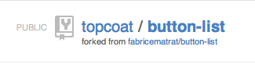

preproCeSSor
by Corinne Krych / @corinnekrych
and Olivier Audard / @_dhar
What is it?
Brand new CSS language?
Nope ...
CSS preprocesors take code written in preprocessed language and then convert that code into POCSS
- Plain Old CSS - in case you're puzzled
Which tools?
Less, SASS & Stylus
There are a variety of CSS preprocessors, the main contenders being Less, SASS and Stylus...
80% of SASS, LESS and Stylus is the same

Syntactically Awesome Style Sheets
mature
the oldest, full of libraries available
strong community
latest addition Scut (thanks Matthieu for tweeting)
based on ruby
does it matter?
Less CSS
buzz
made popular by Twitter Bootstrap
based on JS
does it matter?

CSS with style
youngest
made popular by Topcoat
based on JS
but again does it matter?
Which one?
Too much choices?
Remember 80% implement the same features
For code snippet we use SASS unless stated.
Problem to Solve
How to stay DRY using CSS
Problem 1. Selector Repetition
Take the following snippet of CSS:
.module img {
width: 6em;
padding: 5px;
}
.module p {
color: #7514e1;
text-align: center;
font-size: 0.9em;
}
.module:hover img, .module:active img {
border: 5px #f23eea solid;
padding: 0;
border-radius: 4px;
}
.module.ios h3 {
color: #214067;
}
.module.android h3 {
color: #718927;
}
.module.web h3 {
color: #be420c;
}
.module.hybrid h3 {
color: #60625e;
}
I don't want to keep writing module again and again. It's tedious and repetitive!
Solution 1: Nesting
Much concise:
.module
img
width: 6em
padding: 5px
p
color: #7514e1
text-align: center
font-size: 0.9em
&:hover img, &:active img
border: 5px #f23ee solid
padding: 0
border-radius: 4px
&.ios h3
color: #214067
&.android h3
color: #718927
&.web h3
color: #be420c
&.hybrid h3
color: #60625e
Nesting is a common pattern within CSS preprocessors.
Prepocessors take this and compile it down to CSS for you.
JUST the same syntax fo Less and Stylus
2 syntaxes: sassy scss (.scss) or sass syntax (.sass)
For stylus, 2 syntaxes supported, Less uses "sassy" syntax
Problem 2. Repeating values
Quite often in CSS we stick to a color palette
The whole point is to reuse colors.
h1 {
font-size: 2em;
text-color: #669eb2;
}
h2 {
font-size: 1.75em;
text-color: #e25027;
}
h3 {
font-size: 1.25em;
text-color: #669eb2;
}
h4 {
font-size: 1em;
margin-top: 3em;
text-color: #e25027;
}
copy/paste is my only option...
Solution 2. Variables
CSS Preprocessors let you define variables!
/* Variables to hold our base colour, size */
$gear-color: #669eb2
$aero-color: #e25027
$reference-size: 1em
h1
font-size: $reference-size + 1em
text-color: $gear-color
h2
font-size: $reference-size + 0.75em
text-color: $aero-color
h3
font-size: $reference-size + 0.25em
text-color: $gear-color
h4
font-size: $reference_size
margin-top: 3em
text-color:$aero_gear;
SASS syntax
In Sass, $reference_size same as $reference-size
Small differences in syntax for Less and Stylus
Operation on variables
Just for that...
I would work with a CSS preprocessor
Problem 3. Vendor prefixes
Annoyed by CSS full of vendor prefixes?
.foo {
background: #87e0fd;
background: -moz-linear-gradient(top, #87e0fd 0%, #05abe0 100%);
background: -webkit-gradient(linear, left top, left bottom, color-stop(0%,#87e0fd), color-stop(100%,#05abe0));
background: -webkit-linear-gradient(top, #87e0fd 0%,#05abe0 100%);
background: -o-linear-gradient(top, #87e0fd 0%,#05abe0 100%);
background: -ms-linear-gradient(top, #87e0fd 0%,#05abe0 100%);
background: linear-gradient(to bottom, #87e0fd 0%,#05abe0 100%);
}
Can be fixed using mixin
Solution 3. Mixin
Annoyed by CSS full of vendor prefixes?
.foo {
background-color: #87e0fd;
@include background-image(
linear-gradient(
top,
#87e0fd 0%,
#05abe0 100%
)
);
}
Less redundancy
Use a mixin built into the Compass framework
Problem 3. Vendor prefixes Revisited
Perfect use case for preprocessor usage
Really ???
Problem 3. What are vendor prefixes?
Prefixes to add support for new CSS features
Android: -webkit-
Chrome: -webkit-
Firefox: -moz-
Internet Explorer: -ms-
iOS: -webkit-
Opera: -o-
Safari: -webkit-
By nature, they are temporary
Don't assume properties are named the same
use a generic mixin to generate them, won't work
Use well maintained libraries like Compass or Bourbon
Even better...
postproCeSSor
postprocessor to fix prefixes ;)
like Autoprefixer is kept up to date with can I use database
Problem 4. CSS pattern
For example: vertical align text
to be applied several times on different context
with different variant
Solution 4. mixin with parameter
build your own toolkit
or reuse toolkit like SCUT
@mixin vertically-center ($child: ".vcentered") {
display: table;
& > #{$child} {
display: table-cell;
vertical-align: middle;
}
}
Avoid repetition
use parameter, here with default value
Organize code
Reuse code
Solution4. more mixin
Going further with CSS features
Include block with @content
Loop with @for
Use mixin with @include
Problem 5. Mobile/Desktop
@media queries block scatters styles rules
p {
max-width: 960px;
}
.feature {
max-width: 960px;
}
..... Lots of other CSS rules here
/* AeroGear custom styles for Tablets, break point: 848px */
@media only screen and (max-width: 848px) {
p {
max-width: 720px;
}
.feature {
max-width: 720px;
}
}
Solution 5: @media
What if, we could keep the logic at one place
p
max-width: 960px;
@media only screen and (max-width: 656px)
max-width: 720px;
.feature
max-width: 960px;
@media only screen and (max-width: 656px)
max-width: 720px;
} All CSS on HTML element are grouped in a same place
but I repeat @media WAIT...
I'm not DRY
anymore
Solution 5: Going further@mixin @if
Parametrized break point!
$break-phone:656px
$break-tablet:848px
@mixin respond-to($media-size)
@if $media-size == phone
@media only screen and (max-width: $break-phone)
@content
@else if $media-size == tablet
@media only screen and (min-width:$break-phone + 1) and (max-width: $break-tablet - 1)
@content
@else if $media-size == desktop
@media only screen and (min-width: $break-tablet)
@content
p
@include respond-to(desktop)
max-width: 960px
@include respond-to(tablet)
max-width: 720px
I can stay DRY!
How?
Is it difficult to use?
Getting starting with SASS
Install
> gem install sass
Convert existing CSS
> sass-convert --from css --to sass -R cssCompile
> sass --watch sass:cssGetting starting with Less
Install
> npm install -g lessCompile
> lessc styles.lessDev mode
// include JS
// include less file
// To enable watch, append ‘#!watch’
NOT for production
Getting starting with Stylus
Install
> npm install stylus
Convert existing CSS
> stylus --css css/main.css stylus/main.styllost my comments and my fonts :(
some error when back to CSS :(
Compile
> stylus cssno watch
YES, I can!
Reverse engineer my CSS into Sass
Start with color variables, progressively use mixin for code reusability
Investigate built-in libraries
Build my own CSS toolbox
Delving further
Topcoat
CSS for clean and fast web apps
Fabrice's contribution
took him 2 hours work tbh :P
reusability at its best
Topcoat
Existing button-bar